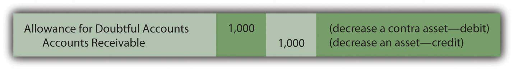
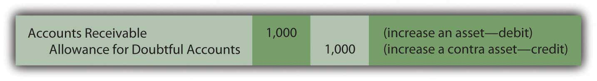
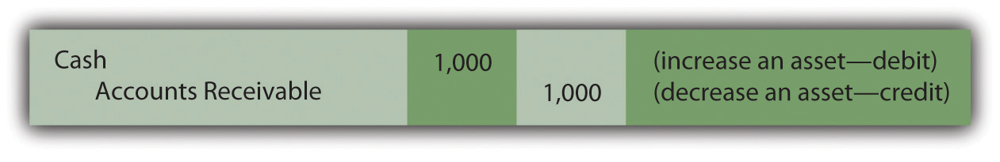
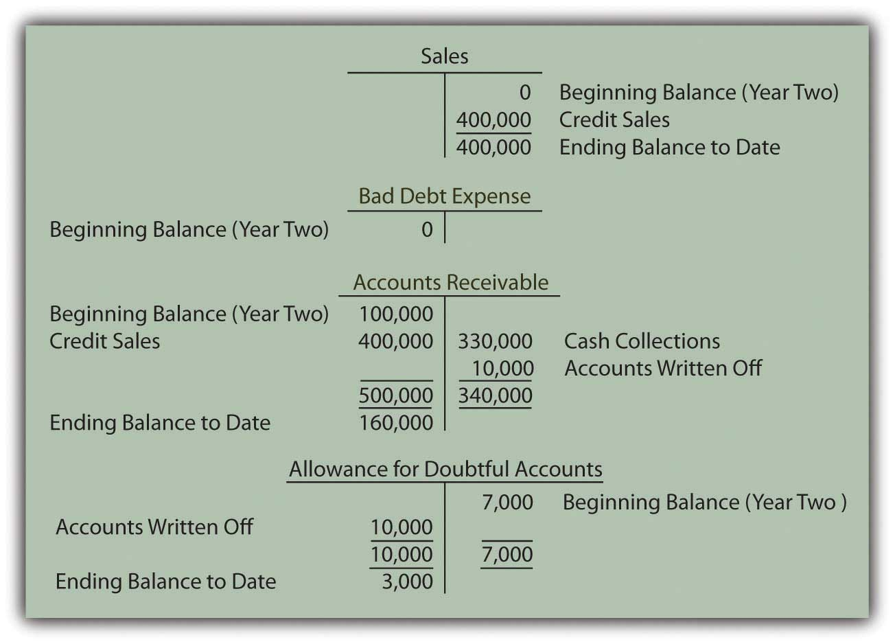

At the end of this section, students should be able to meet the following objectives:
Question: The company in this illustration expects to collect an amount from its receivables that will not materially differ from $93,000. The related $7,000 expense is recorded in the same period as the revenue through an adjusting entry. What happens when an actual account is determined to be uncollectible? For example, assume that on March 13, Year Two, a $1,000 balance proves to be worthless. The customer dies, declares bankruptcy, disappears, or just refuses to make payment. This is not a new expense; $7,000 was already anticipated and recognized in Year One. It is merely the first discovery. How does the subsequent write-off of a receivable as being uncollectible affect the various T-account balances?
Answer: When an account proves to be uncollectible, the receivable T-account is decreased. The $1,000 balance is simply removed. It is no longer viewed as an asset because it does not have future economic benefit. Furthermore, the anticipated amount of bad accounts is no longer $7,000. Because this first worthless receivable has been identified and eliminated, only $6,000 remains in the allowance.
The following journal entry is made to write off this account. This entry is repeated whenever a balance is found to be worthless. No additional expense is recognized. The expense was estimated and recorded in the previous period based on applying accrual accounting and the matching principle.
Figure 7.4 Journal Entry during Year Two—Write-Off of Specific Account as Uncollectible
The two basic steps in the recording of doubtful accounts are:
Link to multiple-choice question for practice purposes: http://www.quia.com/quiz/2092916.html
Question: After an account receivable has been written off as uncollectible, does the company cease in its attempts to collect the amount due from that customer?
Answer: Organizations always make every possible effort to recover any money that they are owed. Writing off an account simply means that the chances of collection are judged to be slim. However, efforts to force payment will continue, often with increasingly aggressive techniques. If money is ever received from a written off account, the company first reinstates the account by reversing the earlier entry. Then, the cash received is recorded in the normal fashion. To illustrate, assume that the above account is eventually collected from this customer.
Figure 7.5 Journal Entry—Reinstate Account Previously Thought to Be Worthless
Figure 7.6 Journal Entry—Collection of Reinstated AccountMany companies combine these two entries for convenience. The debit to accounts receivable in the first entry exactly offsets the credit in the second. Thus, the same recording impact is achieved by simply debiting cash and crediting the allowance for doubtful accounts. However, the rationale for that single entry is not always as evident to a beginning student.

Question: In this illustration, at the end of Year One, the company estimated that $7,000 of its accounts receivable will ultimately prove to be uncollectible. However, in Year Two, that figure is likely to be proven wrong. The actual amount might well be $6,000 or $8,000 or many other numbers. When the precise figure is known, does a company return to its Year One financial statements and adjust them to this correct balance? Should a company continue reporting an estimated figure once it has been shown to be incorrect?
Answer: According to U.S. GAAP, if a number is reported based on a reasonable estimation, any subsequent differences with actual amounts are not handled retroactively (by changing the previously released figures). For example, if uncollectible accounts here prove to be $8,000, the company does not adjust the balance reported as the Year One bad debt expense from $7,000 to $8,000. It continues to report $7,000 for that period even though that number is now known to be wrong.As will be discussed in subsequent chapters, previously issued financial statements are restated if found to contain material misstatements or in a few other specific circumstances. However, a difference between an actual figure and a reasonable estimation is not handled in this manner. In real life, determining whether a previously reported amount was a reasonable estimation can be the subject of intense debate.
There are several practical reasons for the accountant’s unwillingness to adjust previously reported estimations unless they were clearly unreasonable or fraudulent:
Thus, no change is made in financial figures that have already been released whenever a reasonable estimation proves to be wrong. However, differences that arise should be taken into consideration in creating current and subsequent statements. For example, if the Year One bad debts were expected to be 7 percent, but 8 percent actually proved to be uncollectible, the accountant might well choose to use a higher percentage at the end of Year Two to reflect this new knowledge.
Question: To carry this illustration one step further, assume that $400,000 in new credit sales are made during Year Two while cash of $330,000 is collected. Uncollectible receivables totaling $10,000 are written off in that year. What balances appear in the various T-accounts at the end of the subsequent year to reflect sales, collections, and the write-offs of receivables?
Answer: Sales and bad debt expense were reported previously for Year One. However, as income statement accounts, both were closed out so as to begin Year Two with zero balances. They are temporary accounts. In contrast, accounts receivable and the allowance for doubtful accounts appear on the balance sheet and retain their ending figures going into each subsequent period. They are permanent accounts. These two T-accounts will still show $100,000 and $7,000 respectively at the beginning of Year Two.
Assuming that no adjustments have yet been made, these four accounts hold the following balances at the end of Year Two based on appropriate journal entries. Notice that the expense account remains at zero until the end-of-year estimation is made and recorded.
Figure 7.7 End of Year Two—Sales, Receivables, and Bad Debt Balances

Question: In the above T-accounts, the balances represent the account totals for Year Two prior to year-end adjusting entries. Why does a debit balance of $3,000 appear in the allowance for doubtful accounts prior to the recording of the necessary adjustment? When a debit balance is found in the allowance for doubtful accounts, what does this figure signify?
Answer: When the Year One financial statements were produced, $7,000 was estimated as the amount of the receivables that would eventually be identified as uncollectible. In Year Two, the actual total written off turned out to be $10,000. The original figure was too low by $3,000. The difference is now reflected by the debit remaining in the allowance account. Until the estimation for the new year is determined and recorded, the balance residing in the allowance account indicates a previous underestimation (an ending debit balance) or overestimation (a credit) of the amount of worthless accounts.The $3,000 debit figure is assumed here for convenience to be solely the result of underestimating uncollectible accounts in Year One. Several other factors may also be present. For example, the balance in the allowance for doubtful accounts will be impacted by credit sales made in the current year that are discovered to be worthless before the end of the period. Such accounts reduce the allowance T-account prior to the recognition of an expense. The residual allowance balance is also affected by the collection of accounts that were written off as worthless in an earlier year. As described earlier, the allowance is actually increased by that event. However, the financial reporting is not altered by the actual cause of the final allowance figure.
Bad debt expense is estimated and recorded in the period of sale to correspond with the matching principle. Subsequent write-offs of specific accounts do not affect the expense further. Rather, both the asset and the allowance for doubtful accounts are decreased at that time. If a written off account is subsequently collected, the allowance account is increased to reverse the previous impact. Estimation errors are to be anticipated; perfect predictions are rarely possible. When the amount of uncollectible accounts differs from the original figure recognized, no retroactive adjustment is made if a reasonable estimation was made. Decisions have already been made by investors and creditors based on the original data and cannot be reversed. These readers of the statements should have understood that the information could not possibly reflect exact amounts.